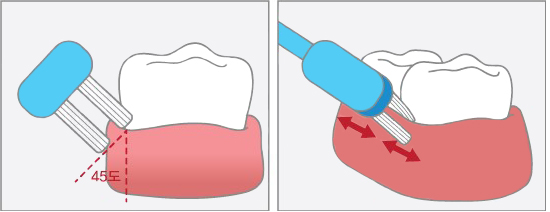

하나마나 양치질, 내게 맞는 칫솔질
하루 3번, 식사 후 3분 이내, 3분간’ 흔히 3·3·3으로 알려진 양치법이지만 입 안에 있는 32개 치아 중 하나만 제대로 닦이지 않아도 충치 혹은 치주염으로 진행될 우려가 큽니다. 많은 횟수보다 한 번을 하더라도 제대로 닦는 것이 중요합니다.
일반인, 기본은 회전법
칫솔을 치아에 밀착시킨 후 손목 회전을 이용해 이와 잇몸이 닿는 경계 부위부터 돌려가며 닦습니다. 특히 아래 어금니 안쪽이나 위 어금니 바깥쪽은 음식이 끼기 쉬운 반면 칫솔이 잘 닿지 않아 제거하긴 어려운 곳입니다. 칫솔질을 시작할 때 이곳부터 시작하면 쉽게 놓치지 않습니다.
손잡이의 형태

대한치주과학회에서도 추천하는 칫솔질 방법으로 ‘치주포켓’이라 불리는 세균주머니를 닦아주는 양치법 입니다. 치아와 잇몸이 닿는 부위에 45도 방향으로 밀착시켜 약 10초 동안 앞·뒤 방향으로 가볍게 흔들어준 뒤 옆으로 이동하며 치아와 잇몸 사이, 잇몸 자체를 진동하며 마사지합니다.
칫솔질 서투른 유아, 횡마법·폰스법
칫솔질에 대해 인식이 부족하고 서투룬 3~6세 시기에는 칫솔질에 대한 흥미와 습관을 길러주는 것이 중요합니다. 칫솔모를 치아에 대고 좌우로 문지르는 횡마법, 직각으로 칫솔모를 대고 넓게 원을 그리듯이 폰스법 방법으로 닦아줍니다. 영구치가 나오는 시점에 회전법으로 바꿔주는 것이 좋습니다.